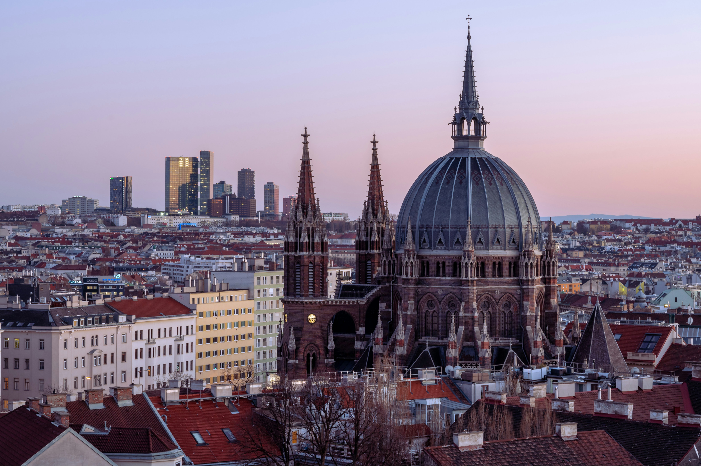
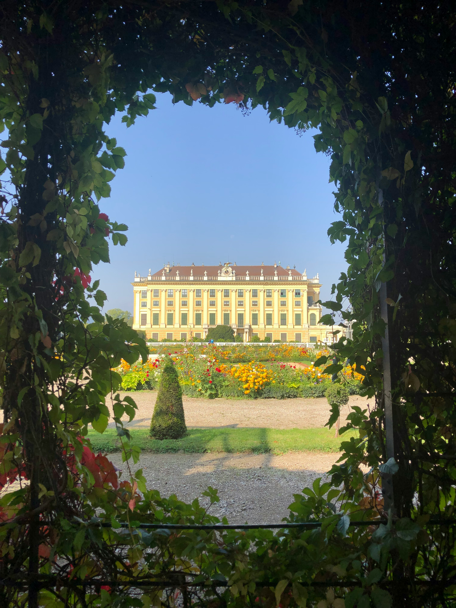

АВТОРСЬКІ ТУРИ
ПО ВІДНЮ ТА АВСТРІЇКомфортні подорожі з душею, які залишають спогади на все життя
Комфортні подорожі з душею, які залишають спогади на все життя

Уже понад 7 років Відень — мій дім. Я знайомлю людей із містом не через сухі дати з Вікіпедії, а через атмосферу, затишні кав’ярні, секретні дворики та історії, які повертають любов до подорожей.
Створюю авторські прогулянки та автобусні тури, де немає поспіху, а є живі емоції, краса та затишок.
Для тих, хто цінує душевну атмосферу, малі групи, нові знайомства та хоче відчути місто як місцевий.
Моя мета — зробити так, щоб після прогулянки ви сказали:
«Я закохався у Відень!»

Ніяких занудних лекцій та сухої Вікіпедії. Тільки найцікавіші локації, затишні дворики та секретні місця Відня.
Приділяю увагу кожному гостю. Створюю дружню та невимушену атмосферу, де комфортно почувається кожен.
Легко адаптуємо темп, робимо паузи на каву, а в разі негоди — коригуємо програму без втрати емоцій.
Підкажу найкращі заклади, куди піти ввечері, як зекономити на транспорті та що привезти з Австрії.

2.5 годиниСобор Св. Стефана, Хофбург, Ратуша, Опера та секретні дворики старого міста.
 2 години
2 години
Міські міфи, масонські символи, легенда про Базиліска та вогні вечірнього міста.

3 годиниРізнобарвні сади, Глорієтта, таємниці династії Габсбургів та імператриці Сісі.
 2.5 години
2.5 години
Найстаріші кав’ярні міста, дегустація торта, шніцель та культові кондитерські.
 1 день
1 день
Автобусний тур до найгарнішого озерного містечка Австрії серед Альп.
 1 день
1 день
Батьківщина Моцарта, фортеця Хоензальцбург, сади Мірабель та Альпи.
 5 годин
5 годин
Замки уздовж Дунаю, абрикосові сади, старовинне аббатство Мельк та дегустації.
 VIP ⭐
VIP ⭐
Складемо програму виключно під ваші побажання, темп та уподобання.
Обирайте тур або просто напишіть у Telegram чи WhatsApp, які дати вас цікавлять і скільки вас людей.
Уточнюємо зручний час, локацію початку, побажання по темпу та коригуємо програму під вашу групу.
Зустрічаємось у призначеному місці, знайомимось та вирушаємо у затишну пригоду по Відню!


«Це була найкраща прогулянка Віднем! Ніяких нудних дат із підручників — лише захопливі історії, затишні кав'ярні та неймовірні локації для фото. Відчули місто по-справжньому!»

«Їздили в Гальштат — організація на вищому рівні! Все чітко, комфортно та без поспіху. Локації просто космічні, а гіду окремий респект за душевну атмосферу протягом усього дня!»

«Замовляли VIP-тур для всієї сім’ї з дітьми. Програму підлаштували під наш темп, діти в захопленні, батьки відпочили. Обов'язково звернемося ще раз, коли повернемося!»